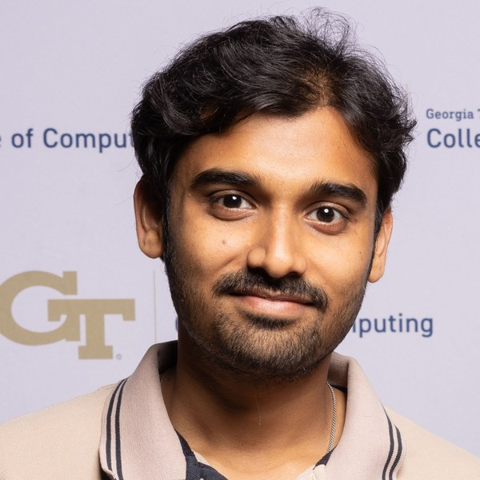

I make GPUs spend less time waiting and more time computing.
Hi! I'm Vijay, a graduate student at Georgia Tech (M.S. in Computational Science & Engineering, class of 2026) working on GPU performance engineering. As a research assistant in the Computational Combustion Lab, I port large-scale CFD solvers to GPUs and optimize them at the kernel level — profiling with Nsight Systems and Compute, reading PTX/SASS when the counters don't add up, and tuning multi-GPU communication over NVLink and InfiniBand.
Outside the lab, I write CUDA kernels for LLM inference — most recently a Q4_K quantized GEMV kernel for llama.cpp's decode phase — and I write about what the profiler teaches me along the way. What pulls me in is the gap between what the hardware can do and what the code actually achieves, and closing it one measured step at a time.
Selected work
Q4_K GEMV kernel for llama.cpp
A custom quantized GEMV kernel for the LLM decode phase, iterated to within 11% of NVIDIA's production kernel. Along the way: five profiled kernel variants, a 30% throughput win from 4-warp parallelism, and a memory-coalescing bottleneck that turns out to affect upstream implementations too.
Multi-GPU communication benchmarking suite
Latency and throughput benchmarks for collective operations across the MPI, NCCL, and UCX stacks, from a baseline AXPY kernel up to multi-node runs — including a custom tree-based reduction that outperforms CUDA-Aware MPI by 4.4× and a 35× latency reduction at 256M elements.
Video model training & inference optimization
End-to-end optimization of a hybrid 3D CNN + Transformer: mixed precision, torch.compile, and XLA for a 3.6× training speedup, plus NeMo-based inference tuning to 3,389 samples/sec at 0.3 ms latency, with strong/weak scaling analysis under PyTorch DDP.
LLM kernels lab
A running study of state-of-the-art LLM kernels — reading them, profiling them, and cataloguing the optimization strategies behind each one with a profile-driven approach.